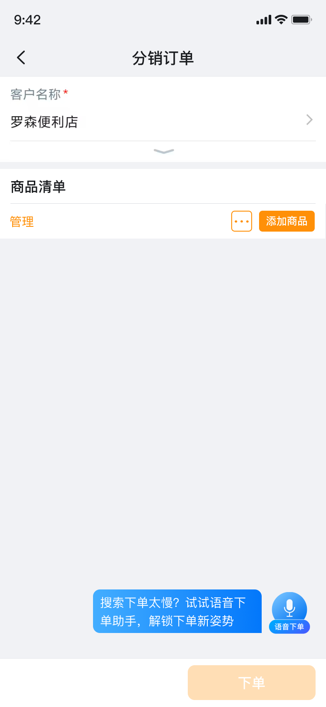
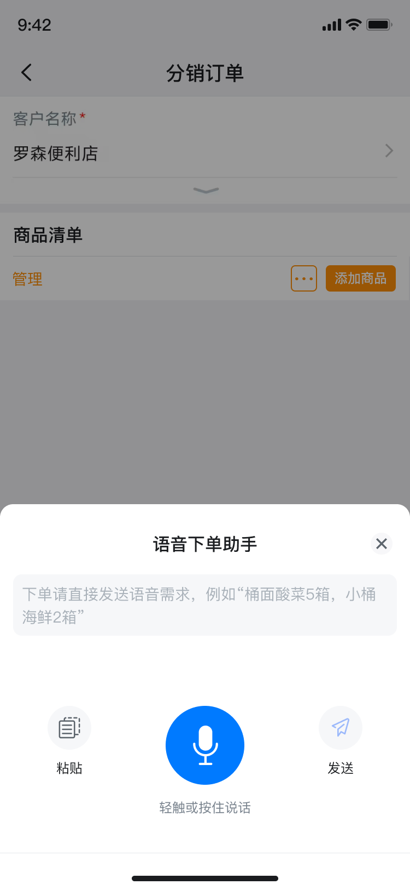
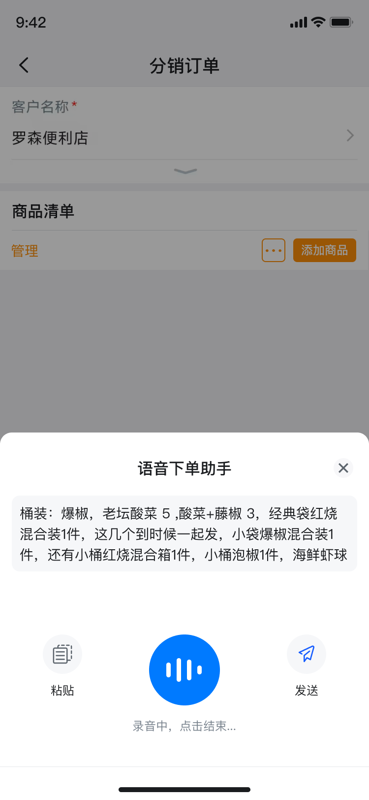
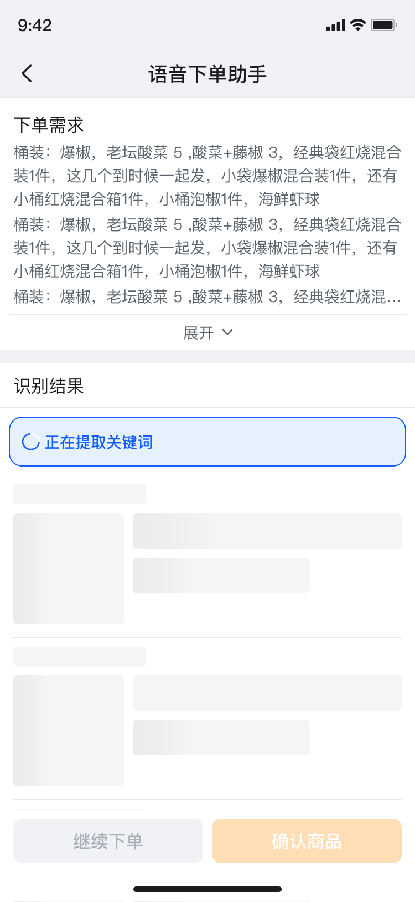
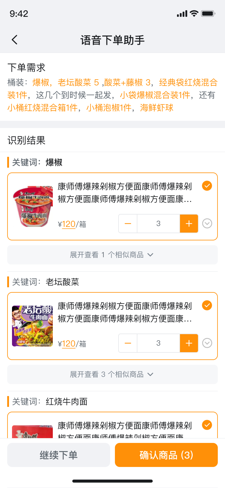
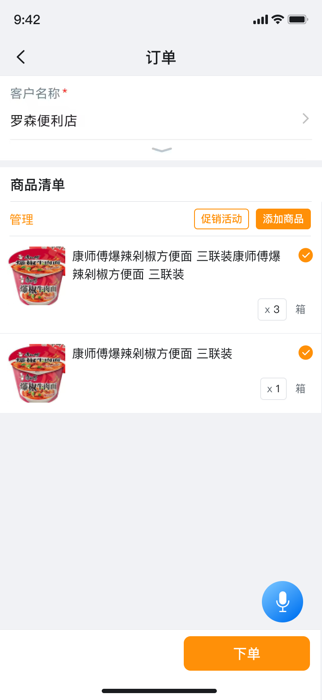

智能抄单助手
把自然语言中的复杂订货需求，转化为可核对、可修正、可继续下单的结构化商品清单。

让“说清楚需求”代替“逐个搜索商品”
传统下单依赖逐一搜索、选择规格和填写数量。当一次需求包含多个商品、规格和包装单位时，操作成本与出错概率同步增加。本项目尝试让用户用更自然的语音或文本表达需求，再由系统完成拆解与匹配。
核心体验问题
设计目标
不是单纯增加一个语音按钮，而是建立从表达、识别、匹配到确认的可信闭环。
围绕“效率、信任、容错”建立设计原则
AI 能缩短任务路径，但也会带来识别不确定性。方案通过过程可见、结果可核对、失败可恢复，平衡智能效率与业务准确性。
入口贴近任务
将语音下单放在订单页面的核心操作区域，并用一次性引导说明价值，不改变用户原有任务上下文。
反馈贯穿全程
录音状态、实时转写、解析加载和识别结果层层衔接，减少等待过程中的不确定感。
错误可以恢复
未命中需求、未命中商品和候选商品不足均提供明确下一步，不让用户陷入无出口的空状态。
体验完整的语音下单流程
点击左侧步骤或使用“上一步 / 下一步”，查看高保真界面与每一步的设计判断。这里展示的是实际方案流程，不是脱离业务的动效演示。





在任务现场解释功能价值
入口固定在订单页面底部，首次进入用简短气泡传达“减少搜索、快速下单”的直接价值，避免让新能力成为无法理解的悬浮按钮。
不仅设计成功路径，也设计失败后的下一步
真实业务中，自然语言不会始终准确命中商品。异常状态的目标不是只告诉用户“失败了”，而是帮助用户理解原因并快速恢复任务。
把 AI 的不确定性，转化为可理解的界面结构
结果页面承担了“解释系统判断”和“支持用户修正”两项任务。信息按照需求原文、解析关键词、匹配商品和最终操作分层，帮助用户快速完成核对。
用关键词组织识别结果
把一段自然语言拆成多个关键词分组，用户可以将系统结果与原始需求逐项对应，减少遗漏。
默认推荐，按需展开候选
首屏优先展示最可能的商品，并将相似商品收起，既控制信息密度，也为识别偏差提供修正入口。
数量可改、商品可取消、结果可继续补充
系统只提供推荐，不代替用户做最终决定。用户可以修改数量、取消单项或全部结果，也可以继续表达新的需求，形成可迭代的下单过程。
从功能上线到持续验证
项目完成从 0 到 1 设计并上线，通过真实使用反馈继续调整识别结果、商品推荐与操作路径。
功能上线后稳定运行，获得真实业务场景中的持续使用。
智能识别与人工确认结合，减少重复搜索和操作失误。
覆盖需求梳理、交互设计、视觉方案、评审跟进与上线迭代。
设计复盘
AI 场景的体验重点不只是“识别得更准”，还需要在识别不准时依然让用户看得懂、改得动、走得下去。过程反馈与用户控制权，是建立智能功能信任感的基础。
后续迭代方向
继续结合真实订单表达积累口语词、商品别名与包装规则，并优化候选商品排序和批量修正效率。